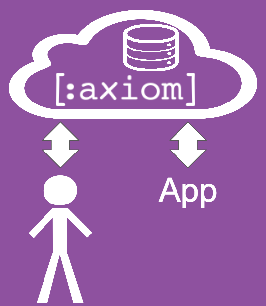
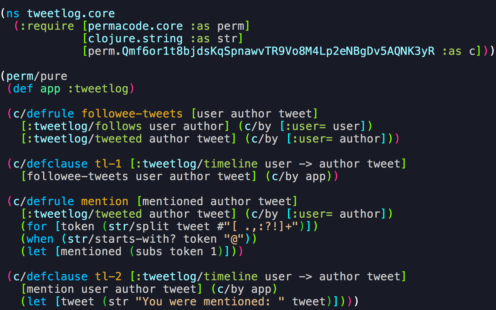

Define your app; don't implement it.
|
Axiom provides a fresh new look at web applications. Today, when building a web application, the application provider is responsible for everything. Responsible for implementing correct business logic, responsible for performance, scale and availability. They are also responsible for defining and implementing a privacy policy ensuring that private user data remains private. |  |
|  |
Axiom is a web platform. It is intended to be provided as a service, and handle most of the common concerns in a web application: Scalability, availability and even confidentiality of user data. Application providers upload their business logic to Axiom as logic rules, written in Clojure. Actually, the rules are written in a Clojure DSL we call Cloudlog. Cloudlog is a purely-declarative DSL, based on a purely-declarative subset of Clojure. Being purely declarative is important for two reasons:
|
|
This example demonstrates how an application is defined using Axiom. This is a Twitter-like application named tweetlog. Like Twitter, its main purpose is to show user timelines based on tweets made by users they follow. In this example, we use two macros: defrule and defclause to define rules and clauses respectively. Rules and clauses both represent logic deductions (similar to Horn Clauses in Prolog). Both rules and clauses operate on facts, which represent user data (:tweetlog/follows and :tweetlog/tweeted in our example). Both rules and clauses can leverage the power of Clojure through the use of guards. Guards are pieces of Clojure code providing variable bindings and filtering through Clojure forms such as (for), (let) and (when). In our example we use guards to extract user-handles mentioned in tweets. The key difference between rules and clauses is the fact that the logic of a clause is applied at query time, when the target query is already known, while the logic of a rule is applied at update time, as facts are added or removed. |
 |